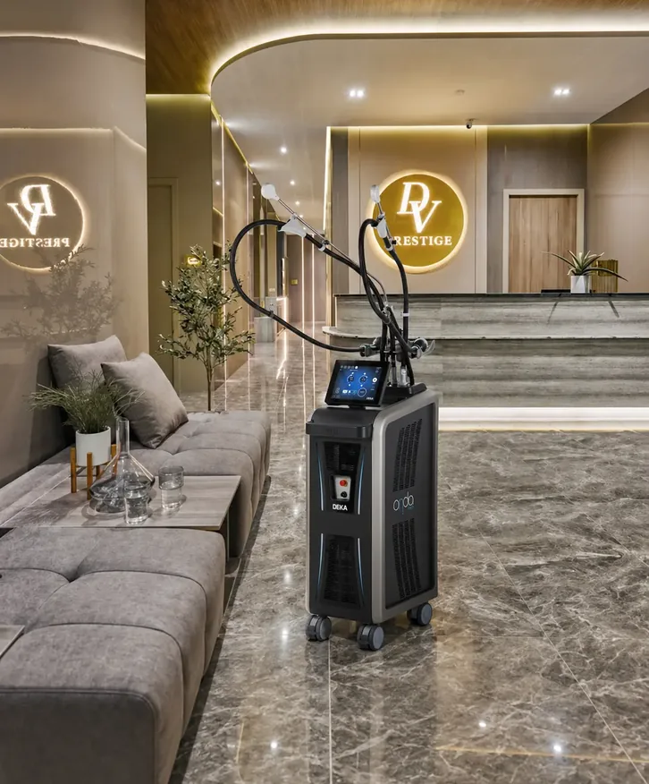
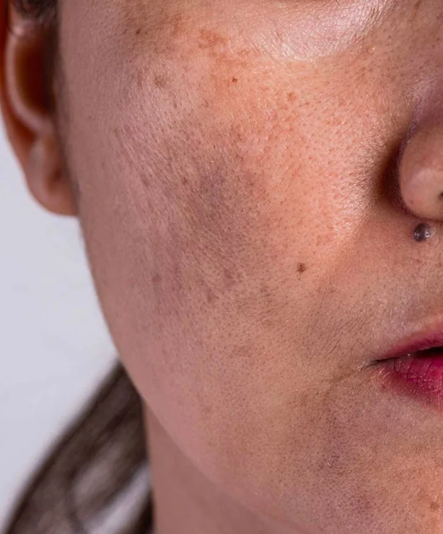

25 September 2026
HydraFacial vs oxygen facial: which facial treatment wins?
Two medical facials, two different jobs. Our doctors explain when each one makes sense.

This article is published on the current Da Vinci Clinic site. In the new site it will be migrated into this template with the same layout as the XERF vs Ultherapy Prime sample.
More articles
View all articles
Plain explanations of treatments, written by the Da Vinci team.

View articleView articleView articleView articleView articleView articleView articleView articleView articleView articleView articleView article

View articleView articleView articleView articleView articleView articleView articleView articleView articleView articleView articleView article

View articleView articleView articleView articleView articleView articleView articleView articleView articleView articleView articleView article
Start your beauty journey today
Every treatment begins with an honest clinical consultation at any of our four Kuala Lumpur clinics. No pressure, no upselling.